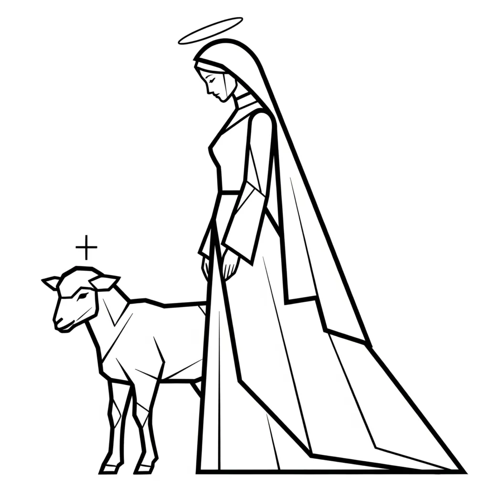

Blessed are they which are called unto the marriage supper of the Lamb. — Revelation 19:9
The Book of Revelation is routinely read as a coded forecast of external catastrophe. Read through the mechanics of consciousness, it is something far more immediate: a precise account of how identity operates within the courtroom of consciousness. The Marriage Supper of the Lamb concentrates three distinct symbolic threads — the lamb, the marriage, and the supper — each of which carries its own deep root in the Bible narrative, and each of which maps directly onto the mechanism by which YHVH/LORD assumes Ehyeh/I AM and Elohim enforces the outcome.
The Lamb: From Abel's Offering to the Unified I AM
The lamb appears in Scripture earlier than is often acknowledged. The first offering of a lamb to Elohim occurs in Genesis 4, in the account of Cain and Abel:
And after a time, Cain brought some of the fruits of the earth as an offering to the Lord. And Abel gave an offering of the first-born of his flocks and of the fat of them. And the Lord was pleased with Abel's offering: But with the offering of Cain he was not pleased. — Genesis 4:3–5
Within the key, this is the first demonstration in Scripture of the difference between a pure filing and a contradicted one. Abel brings the firstling — the best of the assumed state, presented without reservation to Elohim. YHVH/LORD, as present consciousness, offers the identity without withholding. Elohim, the Judges and Rulers of I AM, enforces it. Cain's offering is the jurisdictional error the key identifies as sin: YHVH/LORD presenting a divided or insufficient I AM, and Elohim enforcing the lack accordingly. The lamb therefore enters the Bible narrative as the symbol of an uncontradicted offering — the identity presented to Elohim without the false filing of reservation or doubt.
The Young Lamb: Unconditioned Identity
The specific quality of a young lamb — a firstling, a newborn — carries precise psychological weight within the key's framework. An adult sheep accumulates behaviour: it wanders, fragments, and must be gathered. The young lamb has not yet developed the scattered, wandering impulses the key identifies in Thread 4 as Legion — the fragmented voices of consciousness acting independently before the Shepherd has gathered them into a unified Ehyeh/I AM.
The young lamb therefore represents the newly assumed identity at the moment of first occupation, before the old familiar states have had opportunity to reassert themselves. It is the Ehyeh/I AM in its unconditioned form: no accumulated false filings, no inherited limitation layered over the original assumption, no residue of the sister-state contaminating the bride-state. This is precisely why Abel's offering of the firstborn is accepted while Cain's offering from what remains is not. The firstling is the I AM at its freshest — presented to Elohim before contradiction has time to enter the filing.
Isaiah identifies this quality directly:
He was ill-treated, and overcome; he made no sound; like a lamb he was taken to his death, as a sheep before her shearers is quiet, so he said nothing. — Isaiah 53:7
The lamb's silence under shearing is not passivity — it is the complete absence of resistance or contradiction. YHVH/LORD, as the one presenting the I AM to Elohim, offers the assumed identity without the internal noise of competing voices arguing against it. No counter-claim, no double-minded protest. This is the mechanical quality the key requires for Elohim to enforce the desired outcome: the filing is clean because no contradicting voice rises to contest it.
John the Baptist identifies Jesus with this same image at the opening of his ministry:
On the day after, he saw Jesus coming to him, and said, See, the Lamb of God, who takes away the sin of the world! — John 1:29
Within the key, taking away the sin of the world is the removal of the jurisdictional error — the correction of every false filing in which YHVH/LORD has presented lack, limitation, or fragmentation to Elohim and received enforced lack in return. The Lamb of God is the uncontradicted I AM that, when assumed, displaces the accumulated false filings and presents Elohim with a clean, enforceable identity. This is the I AM of Exodus 3:14 in its purest operational form: Ehyeh Asher Ehyeh, the self defined entirely by the state assumed, with no competing claim.
The Passover lamb of Exodus establishes the same mechanics in narrative form:
Your lamb is to be without any mark, a male in its first year; you may take it from among the sheep or the goats. — Exodus 12:5
And the blood will be a sign on the houses where you are: and when I see the blood I will go over you, and no disease will come on you to be your destruction, when I send punishment on the land of Egypt. — Exodus 12:13
The lamb without blemish is the Ehyeh/I AM without contradiction — the identity assumed in its full integrity, free of the marks that would indicate a compromised or divided filing. The blood on the doorpost is the outward sign of an inward assumption: YHVH/LORD has marked the threshold of consciousness with the uncontradicted I AM, and Elohim passes over — does not enforce destruction — because the filing presented is clean. Israel's departure from Egypt immediately follows: the leave-and-cleave sequence initiates the moment the Passover lamb is offered. The old identity of bondage is vacated and the new identity of a free people is assumed, with the young lamb's blood as the mark of the transition.
The Shepherd and the Flock: Thread 4 in the Marriage Narrative
The lamb of Revelation cannot be fully understood without the Shepherd who gathers it. Thread 4 of the key identifies YHVH/LORD as the Shepherd: gathering consciousness that observes the scattered impulses of its own internal voices — the wandering thoughts that act as Legion when unaligned — and draws them into a single coherent Ehyeh/I AM. The flock unified under the Shepherd is the plurality of Elohim brought into agreement beneath one ruling identity.
The Lord is my keeper: I will not be in want. He makes a resting-place for me in the green fields: he is my guide by the quiet waters. He gives new life to my soul: he is my guide in the ways of righteousness because of his name. — Psalm 23:1–3
The Shepherd of Psalm 23 is YHVH/LORD operating as the governing consciousness that maintains alignment between present awareness and the assumed identity. Green pastures and still waters are not rewards delivered from outside; they are the conditions Elohim enforces when YHVH/LORD occupies the identity of the one who lacks nothing. The name at the end of verse 3 — his name — is the identity-code the key identifies in Thread 8: the nature of the state being assumed, which Elohim enforces because the Shepherd has presented it without division.
I AM the good shepherd: the good shepherd gives his life for the sheep. He who is a servant and not the shepherd, whose sheep they are not, sees the wolf coming and goes away, leaving the sheep: and the wolf comes down on them and they go in all directions. The servant goes in flight because he is a servant and has no interest in the sheep. I am the good shepherd; I have knowledge of my sheep and they have knowledge of me. — John 10:11–14
The hireling who abandons the flock when the wolf appears is YHVH/LORD retreating from the assumed identity the moment outer circumstances contradict it. The wolf — the circumstance that appears to deny the desired state — causes the fragmented voices to scatter again into Legion. The good Shepherd holds. YHVH/LORD maintains the assumed Ehyeh/I AM regardless of what external evidence presents, and Elohim enforces the identity that is held, not the circumstance that threatens it. The sheep who know the Shepherd are the internal governing voices that have been unified beneath one ruling I AM and remain coherent under pressure.
And I have other sheep which are not of this fold: and I must be their guide, and they will have knowledge of my voice; and there will be one flock, one shepherd. — John 10:16
One flock, one shepherd is the completion of the Thread 4 mechanism: the scattered plurality of internal voices, gathered from every corner of consciousness, unified beneath a single Ehyeh/I AM. This is the state of the bride made ready in Revelation 19. Every fragmented voice has been brought into the fold. Elohim receives one unified filing and enforces one outcome. The Marriage Supper is the feast that follows this gathering — the celebration that the plurality has been resolved into singular identity and Elohim has confirmed the verdict.
The Marriage: Leave, Cleave, One Flesh
The structural root of the marriage imagery is Genesis 2:24:
So a man will leave his father and his mother and be joined to his wife: and they will be one flesh. — Genesis 2:24
Father and mother in this verse are the origin-states of consciousness: the familiar, inherited conditions, the habitual I AM occupied so long it feels like identity itself. Abraham leaving his father's house operates on exactly this level — he is not changing geography but vacating a limiting assumed identity and moving into the state encoded in his new name. The name Father of Many is the seed: the latent potential of the I AM that Elohim will enforce once YHVH/LORD assumes it without retreat.
The leave is the precondition for the cleave. YHVH/LORD cannot occupy two identities simultaneously and expect Elohim to enforce the desired one. The old state — the sister, the familiar, the origin — must be vacated before the bride-state can be assumed. The Song of Solomon makes this transition explicit when the bridegroom addresses the woman first as sister and then as bride:
Come with me from Lebanon, my bride, with me from Lebanon: let your eyes be turned from the top of Amana, from the top of Senir and Hermon, from the holes of the lions, from the mountains of the leopards. You have taken my heart, my sister, my bride. — Song of Solomon 4:8–9
Sister is the known state — the identity consciousness has occupied before. Bride is the new identity assumed, the Hebrew kallah, the prepared one entering union. The invitation to come from Lebanon is the invitation to leave the terrain of the old I AM entirely. The departure is the mechanical precondition for the marriage. Elohim cannot enforce the bride-state while YHVH/LORD remains identified with the symbolic sister-state, any more than Abel's firstling could be offered while Cain's lesser offering occupied the same altar.
Cleaving is the sustained occupation of the new state. YHVH/LORD does not sample the new identity and return to the familiar one. The mechanism requires that present consciousness and the assumed Ehyeh/I AM become one flesh — indistinguishable in the internal filing, inseparable in what is presented to Elohim. Israel leaving Egypt operates on the same principle at the collective scale: the departure is not from a country but from the identity of bondage, and the cleaving is to the identity of a people under the covenant name YHVH/LORD. Elohim enforces the identity that is cleaved to, not the one that was left.
When Revelation 19:7 declares that the bride has made herself ready, this is the completion of the leave-and-cleave sequence. Every contradictory voice has been withdrawn. Every residual filing under the old identity has been vacated. YHVH/LORD presents one uncontested Ehyeh/I AM to Elohim, and Elohim is bound to enforce it:
Let us be glad and have joy, and give him glory: for the marriage of the Lamb has come, and his bride has made herself ready. — Revelation 19:7
The Garment: Righteousness as Right-Filing
And it was given to her to be clothed in fair linen, clean and white: for the fair linen is the upright acts of the saints. — Revelation 19:8
The garment is the state made visible. Scripture uses clothing consistently as a symbol of the inward I AM being worn. The white linen signals a singular, uncontaminated assumption — no residue of the old state, no hidden contradiction folded into the identity presented to Elohim. The key identifies this as right-filing: YHVH/LORD presenting Ehyeh/I AM without the jurisdictional error of sin, which is the mechanical failure of assuming lack while claiming abundance.
Righteousness here is the condition of being in complete accord with the chosen I AM. It is the state of the flock unified under the Shepherd, the offering made without withholding, the bride who has left the sister-state and occupied the bride-state without division. The young lamb without blemish from Exodus 12 and the white linen of Revelation 19 are the same quality expressed through different imagery: the uncontradicted I AM, clean of every false filing, presented to Elohim for enforcement.
The word granted is precise. The garment is given the moment YHVH/LORD's filing is complete. Elohim does not deliberate; the statutes of creation enforce alignment automatically once the I AM presented is uncontested. This is grace in the mechanical sense — not moral favour dispensed from outside but the automatic enforcement Elohim applies the moment the condition is met.
The Supper: Feasting on the Assumed State
The supper is the inward enjoyment of the assumed state before it appears in external experience. Union alone is insufficient in the mechanics of the key; the Ask, Believe, Receive sequence requires that YHVH/LORD not only assume Ehyeh/I AM but inhabit it sensorially — tasting the reality of the assumed state from within. The feast is that inhabitation. Consciousness nourishes itself on the identity it has assumed, and Elohim enforces that nourishment as lived experience in the world.
I am my loved one's, and my loved one is mine: he takes his food among the lilies. — Song of Solomon 6:3
The beloved feeding among the lilies is the assumed state enjoyed from within — not sought from a distance but occupied and inhabited. YHVH/LORD no longer reaches toward the desired identity as something external but dwells within it as present reality. This is the supper: the feasting that follows the marriage, the inner experience of the wish fulfilled that Elohim then enforces outwardly.
To be called to the supper is to awaken to the operational name declared in Exodus 3:14: Ehyeh Asher Ehyeh, I AM that I AM. The invitation is the recognition that YHVH/LORD, as present awareness, has always had the authority to assume any identity and present it to Elohim for enforcement. The blessed ones are those who accept that authority — who leave the old state, cleave to the new, clothe themselves in the uncontradicted I AM, and feast on its reality before the outer world has confirmed it.
Blessed are they which are called unto the marriage supper of the Lamb. — Revelation 19:9
The Courtroom of Consciousness: The Full Mechanism
The three elements of the Marriage Supper sequence — the Lamb, the marriage, the supper — map the full courtroom mechanics the key establishes through Genesis 1 and 2. Elohim defines the parameters of creation. YHVH/LORD assumes the Ehyeh/I AM. Elohim enforces the outcome.
The Lamb is the quality of the I AM presented: pure, unified, unconditioned, uncontradicted — the young firstling of Abel's offering translated into the language of identity, the Passover lamb without blemish marking the threshold of consciousness, the silent lamb of Isaiah carrying no internal resistance to the assumed state. The marriage is the mechanism of assumption: YHVH/LORD leaving the familiar state and cleaving to the chosen Ehyeh/I AM until they are one flesh, the Shepherd gathering every scattered voice into the one fold. The supper is the sensorially inhabited assumption that Elohim receives as the final filing and enforces as reality.
The plural structure of Elohim matters throughout. The Judges and Rulers of I AM are the many internal governing voices that either fragment under competing assumptions or unify beneath a single dominant I AM. The bride made ready in Revelation 19 is the completion of the Thread 4 gathering: the one flock under one Shepherd, every governing voice brought into coherence beneath the ruling Ehyeh/I AM that YHVH/LORD has chosen to occupy. The scattered sheep gathered by the Shepherd, the firstling offered without withholding, the young lamb without blemish, and the bride clothed in white linen are all the same event described from different angles: the moment the plurality of consciousness submits to one ruling I AM, and Elohim enforces it as the world the reader inhabits.
About The Author | Revelation Series | Song of Solomon Series | Shepherd And Lamb Series | Bible Verse Analysis